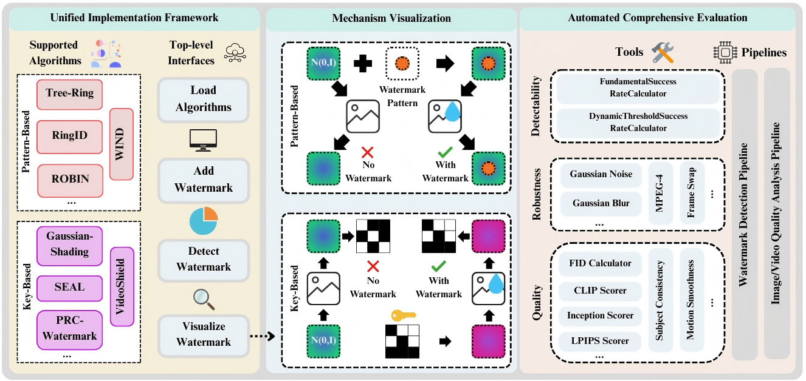

Why is Watermarking Technology Important?
With the rapid development of generative AI models, particularly large language models and diffusion models, AI-generated content is increasingly integrated into daily life and work. However, this integration brings numerous challenges, including the spread of misinformation, copyright protection issues, and questions of accountability. In this context, watermarking technology serves as an effective content identification method and plays a crucial role in addressing these challenges.
Content Tracing
Distinguish AI-generated content from human-created content, prevent the spread of misinformation, and maintain a healthy information ecosystem.
Copyright Protection
Protect intellectual property rights of original content and prevent unauthorized AI model training and content generation.
Watermarking Technology Principles
Watermarking technology embeds imperceptible yet detectable signals during the AI generation process to mark and identify generated content. This technology adds unique "fingerprints" to each generated content without compromising content quality.
High Detectablity
Ensure that watermark signals can be reliably detected with high accuracy.
Low Impact on Content Quality
Watermarks should not degrade the quality of the generated content or affect user experience.
Strong Robustness
Watermarks should ensure high robustness against various attacks, such as paraphrasing, reformatting, and noise addition.
Low Impact on Speed
Watermark embedding and detection processes should be efficient and not significantly affect generation speed.
Open-Source Projects
We have developed two generative watermarking toolkits for different types of targeted content, providing complete watermarking solutions for researchers and developers.
MarkLLM
Text Watermarking
Watermarking Toolkit for Large Language Models
MarkLLM is an open-source text watermarking toolkit specifically designed for large language models, providing a unified implementation framework that support multiple advanced text watermarking algorithms, visualization tools, and comprehensive evaluation modules.
- Watermark Embedding: Add imperceptible watermarks during text generation
- Watermark Detection: Accurately identify watermark signals in text
- Mechanism Visualization: Intuitively demonstrate watermarking algorithm principles
- Robustness Testing: Evaluate watermark stability under various attacks
- Quality Assessment: Analyze the impact of watermarks on text quality
MarkDiffusion
Image/Video Watermarking
Watermarking Toolkit for Latent Diffusion Models
MarkDiffusion is an open-source generative watermarking toolkit for latent diffusion models, focusing on watermarking technology for image and video content, providing unified implementation frameworks, visualization tools, and evaluation modules for various watermarking algorithms.
- Watermark Embedding: Add invisible watermarks during image/video generation
- Watermark Detection: Accurately extract and verify watermarks in visual content
- Mechanism Visualization: Display watermark distribution patterns in frequency and spatial domains
- Robustness Testing: Evaluate watermark resistance to various image/video processing attacks
- Quality Assessment: Analyze the impact of watermarks on visual content quality
Project Architecture
Both toolkits adopt modular design architecture, providing unified implementation frameworks and evaluation systems for watermarking technologies across different modalities.
MarkLLM Architecture

MarkLLM adopts a unified implementation framework that supports the integration of multiple text watermarking algorithms. The architecture includes algorithm layers, visualization layers, and evaluation layers, providing complete text watermarking solutions.
MarkDiffusion Architecture
MarkDiffusion focuses on watermarking technology for diffusion models, supporting image and video content. The modular design facilitates algorithm extension and performance evaluation, providing a comprehensive visual watermarking toolkit.